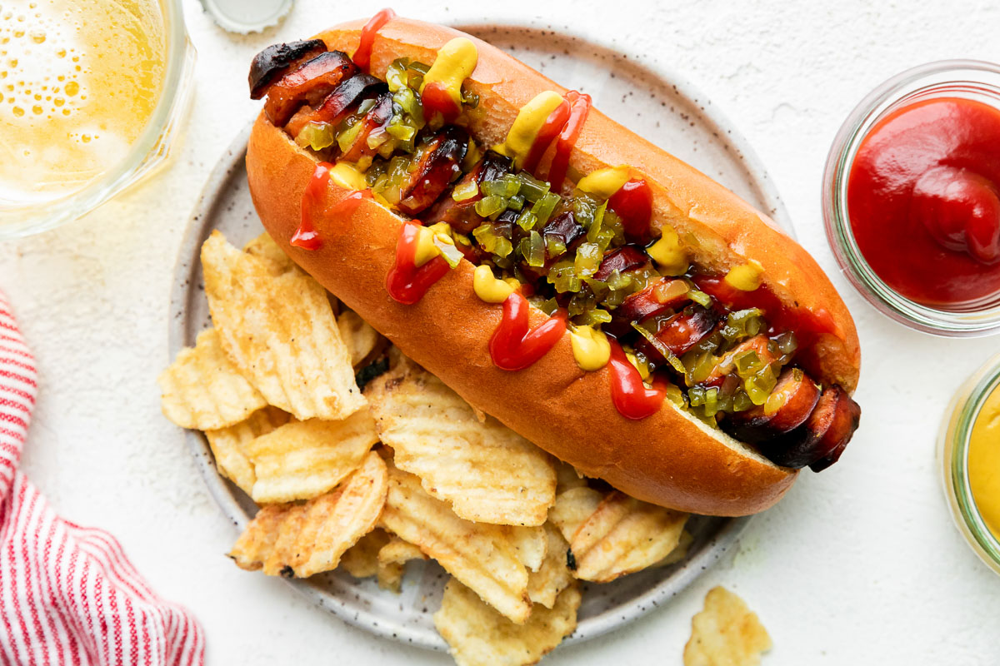

American style Hot Dog recipe

Description
Hot dog is a junk food dish consisting of a bun and a sausage. Condiments and garnishes vary in different parts of the world.
Condiments that are used most often in hot dog preparation include ketchup, mustard and relish.
Typical garnishes are diced onions, sauerkraut, chili, grated cheese, etc.
It is not known who started serving sausages in a bun.
There are several possible origins dated back to the end of the 19th beginning of 20th century.
The term dog has been used as a synonym for sausage since the 1800s, possibly because of the accusations that sausage makers used dog meat.
Ingridients
- hot dogs
- hot dog buns
- ketchup (Optional)
- mustard (Optional)
- mayonnaise (Optional)
- pickle relish (Optional)
- diced onion (Optional)
- coleslaw (Optional)
- bacon (Optional)
- jalapeno (Optional)
Steps
- Fill a large saucepan with enough water to cover hot dogs (about 1 cup per hot dog).
- Bring water to a boil.
- Add the hot dogs.
- Reduce the heat to the low setting and allow the hot dogs to simmer for anywhere from 3 to 6 minutes (the longer they simmer, the crispier they'll be).
- Once they're done, use tongs to remove them from the water and pat them dry with paper towels.
- Heat each bun on a pan for 2 minutes.
- Put a hot dog in a heated bun.
- Add desired garnishes and condiments.
Return to home page.